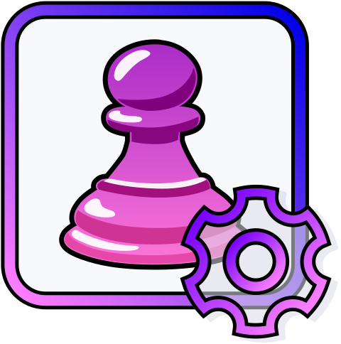

ChessHelper Extension
We love Chess.com! Let's make it even better, together

Disable plugin
Dark mode
English
German - Deutsch
Spanish - español
Polish - polski
Ukrainian - українська
Swedish - svenska
Arabic - العربية
-------------- beta options --------------
French - français
Dutch - Nederlands
Afrikaans
Albanian - shqip
Amharic - አማርኛ
Aragonese - aragonés
Armenian - հայերեն
Asturian - asturianu
Azerbaijani - azərbaycan dili
Basque - euskara
Belarusian - беларуская
Bengali - বাংলা
Bosnian - bosanski
Breton - brezhoneg
Bulgarian - български
Catalan - català
Hindi - हिन्दी
Central Kurdish - کوردی (دەستنوسی عەرەبی)
Chinese - 中文
Corsican
Croatian - hrvatski
Czech - čeština
Danish - dansk
Esperanto - esperanto
Estonian - eesti
Faroese - føroyskt
Filipino
Finnish - suomi
Galician - galego
Georgian - ქართული
Greek - Ελληνικά
Guarani
Gujarati - ગુજરાતી
Hausa
Hawaiian - ʻŌlelo Hawaiʻi
Hebrew - עברית
Hungarian - magyar
Icelandic - íslenska
Indonesian - Indonesia
Interlingua
Irish - Gaeilge
Italian - italiano
Japanese - 日本語
Kannada - ಕನ್ನಡ
Kazakh - қазақ тілі
Khmer - ខ្មែរ
Korean - 한국어
Kurdish - Kurdî
Kyrgyz - кыргызча
Lao - ລາວ
Latin
Latvian - latviešu
Lingala - lingála
Lithuanian - lietuvių
Macedonian - македонски
Malay - Bahasa Melayu
Malayalam - മലയാളം
Maltese - Malti
Marathi - मराठी
Mongolian - монгол
Nepali - नेपाली
Norwegian - norsk
Norwegian Bokmål - norsk bokmål
Norwegian Nynorsk - nynorsk
Occitan
Oriya - ଓଡ଼ିଆ
Oromo - Oromoo
Pashto - پښتو
Persian - فارسی
Portuguese - português
Quechua
Romanian - română
Romanian (Moldova) - română (Moldova)
Romansh - rumantsch
Scottish Gaelic
Serbian - српски
Serbo-Croatian - Srpskohrvatski
Shona - chiShona
Sindhi
Sinhala - සිංහල
Slovak - slovenčina
Slovenian - slovenščina
Somali - Soomaali
Southern Sotho
Sundanese
Swahili - Kiswahili
Tajik - тоҷикӣ
Tamil - தமிழ்
Tatar
Telugu - తెలుగు
Thai - ไทย
Tongan - lea fakatonga
Turkish - Türkçe
Turkmen
Twi
Urdu - اردو
Uyghur
Uzbek - o‘zbek
Vietnamese - Tiếng Việt
Walloon - wa
Welsh - Cymraeg
Western Frisian
Xhosa
Yiddish
Yoruba - Èdè Yorùbá
Main features:
Enable "Focus mode"
(best for Streams and Bullet)
Disable stream on Main page
Add HyperBullet choice (30s)
Disable "About me" popup
Disable Chat
Hide chat notification:
"Do not start a game unless..."
Board features:
Set board to 100% fixed height
Make coordinates bigger
Toggle Visibility
Coordinates on each square
Make them less visible
Bigger time controls
Disable cursor change on hover
Additional Features:
Toggle Visibility
Show reload option if disconnected
Refresh page automatically (beta)
Double-click resign
(without "Are you sure" popup)
Add fullscreen button (bottom right corner)
Color palette / font:
Select theme:
NEW
Default (Dark Green)
Kittens
Windows-Type High-Contrast
Night Owl
Dark Purple
Shrek is Love
--------------
New Options v1.0.4
--------------
Amoled Black
Select font:
Default (Trebuchet MS)
Pixelify
Montserrat
Poppins
Merriweather
Nunito
Gabarito
Playfair
Roboto
Roboto Condensed
Caprasimo
Inter
Custom Pieces / Board:
Select Pieces:
NEW
Default (System)
HeavenApple (by @gerwld)
Muesli (by @gerwld)
Muesli Mramor (by @gerwld)
Muesli Metal (by @gerwld)
Muesli Blue (by @gerwld)
Ice (by @gerwld)
Brushed Metal (by @gerwld)
Forest (by @gerwld)
Blue Lake (by @gerwld)
Blue Lake 2 (by @gerwld)
Purple (by @gerwld)
Pink (by @gerwld)
32bit (by Dani Maccari)
Kiwen Suwi (by neverRare)
--------------
New Options v1.0.4
--------------
Cburnett (by Colin M.L. Burnett)
Cburnett (by Colin M.L. Burnett, edited by JohnPablok)
Ridiculous Pieces (by A B)
New Metropol (by Max K, Tails204)
Letters (by @gerwld)
Kawaii 1 (System Pieces + Anime Pawns)
--------------
New Options v1.1.4
--------------
Anarcandy (by caderek)
celtic (by Maurizio Monge)
dbenbenn (by @Dbenbenn)
fantasy (by Maurizio Monge)
gioco (by @sadsnake1)
leipzig (by Armando Hernandez Marroquin)
maestro (by @sadsnake1)
staunty (by @sadsnake1)
cardinal (by @sadsnake1)
Chess7 (by Style-7, styleseven.com)
dubrovny (by @sadsnake1)
fresca (by @sadsnake1)
icpieces (by @sadsnake1)
libra (by @sadsnake1)
spatial (by @Maurizio Monge)
tatiana (by @sadsnake1)
Select Board:
Default (System)
Emerald (by @gerwld)
Industrial (by @gerwld)
Arcade (by @gerwld)
Night in Desert (by @gerwld)
Field (by @gerwld)
Autumn (by @gerwld)
Soft Purple (by @gerwld)
Soft Brown (by @gerwld)
Soft Mint (by @gerwld)
Purple (by @gerwld)
New Brown (by @gerwld)
Deep Blue (by @gerwld)
Los Angeles (by @gerwld)
Dimmed Blue (by @gerwld)
Dimmed Blue 2 (by @gerwld)
Dark Blue (by @gerwld)
Some Unix (by @gerwld)
Blue 'n Black (by @gerwld)
Iceberg (by @gerwld)
Revo (by @gerwld)
Twilight (by @gerwld)
Dark High Contrast (by @gerwld)
Jelly Light (by @gerwld)
--------------
New Options v1.0.4
--------------
Gray Eyes (by @gerwld)
Pepper Mint (by @gerwld)
Black & White (by @gerwld)
Green 2 (by @gerwld)
Polarizer (by @gerwld)
Dark Blue (by @gerwld)
Midday Sun (by @gerwld)
Teal (by @gerwld)
Disa Board (by @gerwld)
Disa Board Night (by @gerwld)
Overheated stain (by @gerwld)
Webpunk is alive (by @gerwld)
Frosted Glass - Red (by @gerwld)
Paper & Ice (by @ricalucalic)
Old Wood (by @gerwld)
You turned off ChessHelper